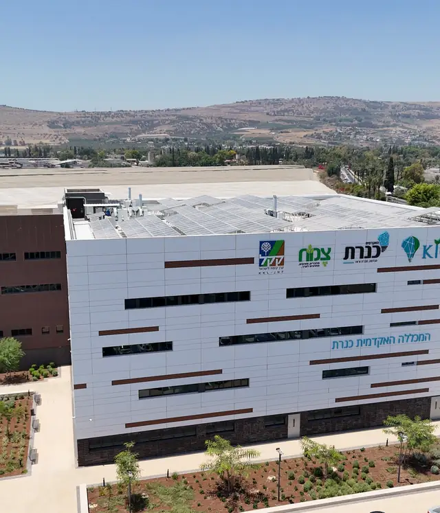
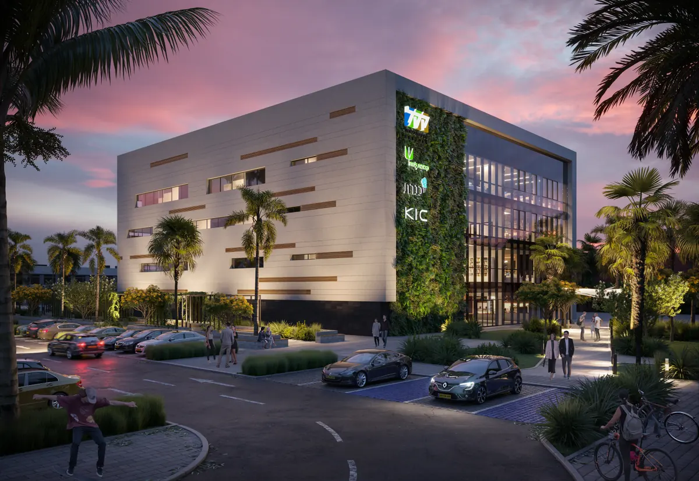
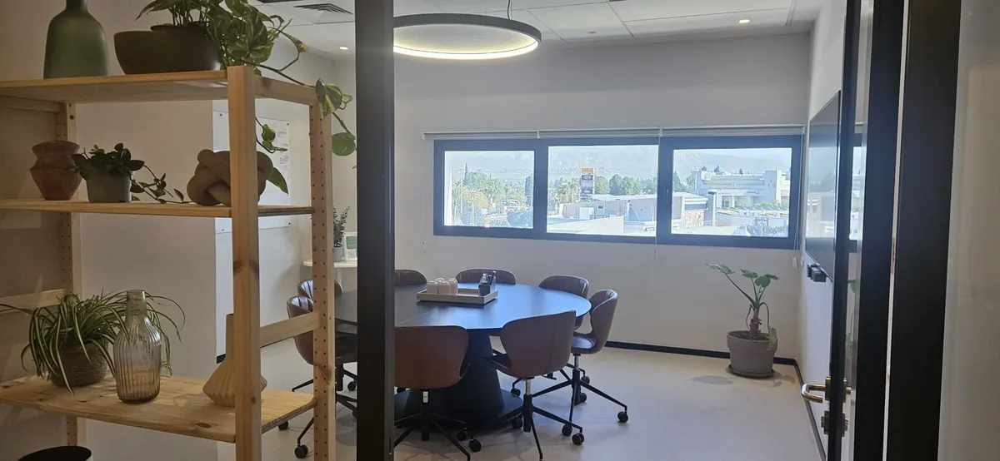
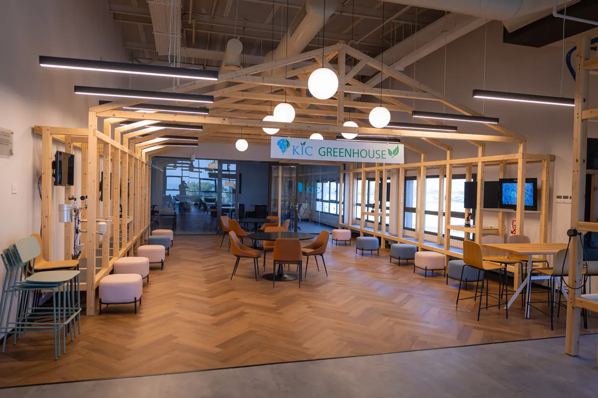
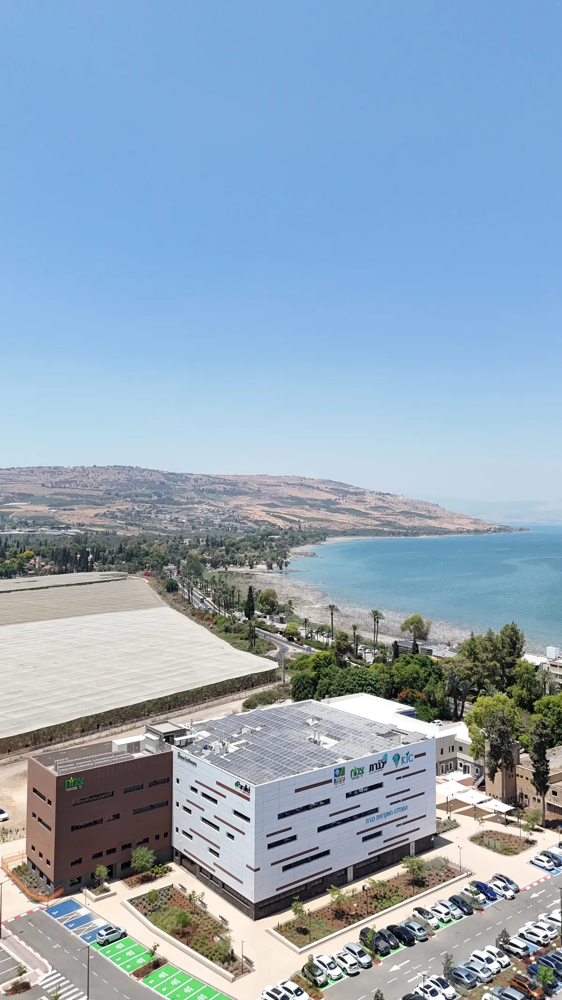
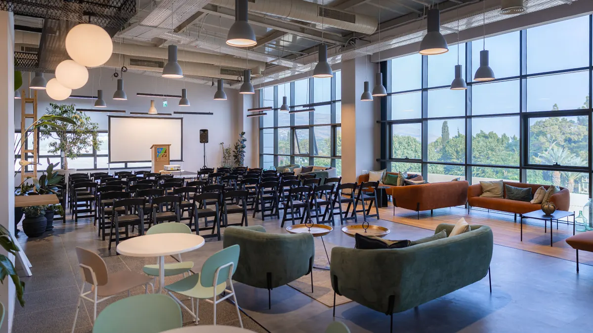

KINNERET INNOVATION CENTER
הפעילות הבאה
שלכם מתחילה
במקום אחר.
ימי הנהלה, אוף‑סייט, ימי צוות ואירועי חברה – בפארק ההייטק היחיד על שפת הכנרת.
פארק ההייטק של הצפון.

מול הכנרת
נוף פתוח למים ולגולן מחללי הפארק.
אקוסיסטם חי
סטארטאפים, מעבדות ואקדמיה – וחיבורים אמיתיים.
מרחבים מתקדמים
אופן ספייס, Green House וחדרי ישיבות.
פארק ההייטק של הצפון – על שפת הכנרת.

ימי הנהלה ואסטרטגיה
יש החלטות שכדאי לקבל מחוץ למשרד. חדרי ישיבות מתקדמים, אירוח מקצועי וחשיפה לעולם של חדשנות ותעשייה – מול הכנרת.

ימי עבודה מחוץ למשרד
לפעמים צריך לשנות סביבה כדי לחשוב אחרת. מרחבי עבודה, חדרי ישיבות, סדנאות ותוכן מקצועי בתוך אקוסיסטם חי.

ימי צוות וגיבוש
יום שמחבר בין אנשים, רעיונות וחוויות: מרחבים מתקדמים, פעילויות משותפות, תוכן מעשיר ואפשרות לשלב חוויה בכנרת.

אירועי חברה, כנסים והשקות
חללי אירועים, תשתיות טכנולוגיות, מיתוג, אירוח ותוכן – כי אצלנו כל אירוע מקבל ערך נוסף.